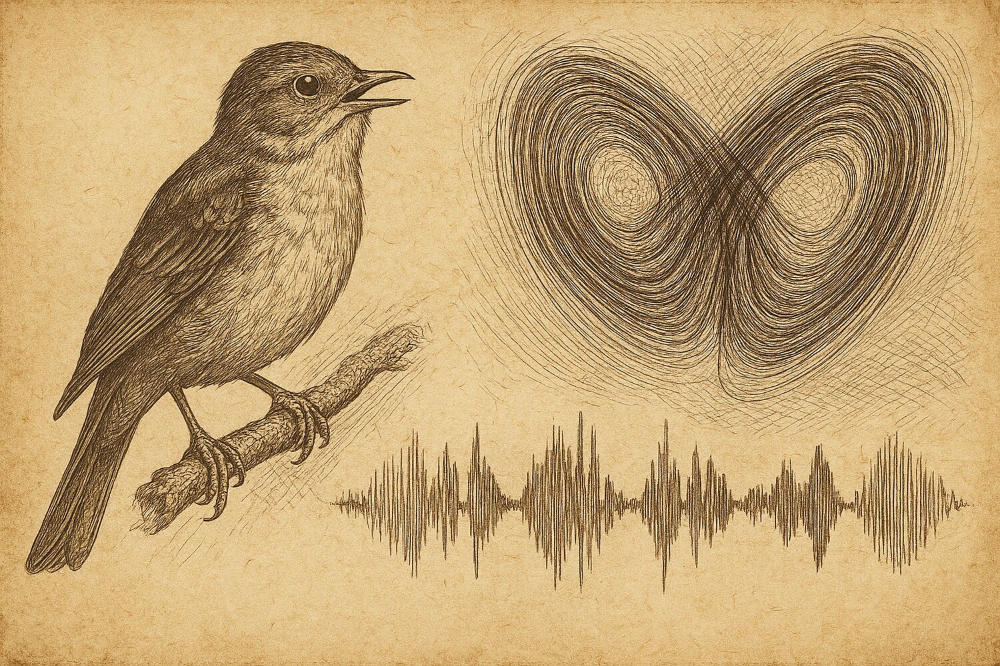

Duellum Veritatis · nightly duel
A nocturnal duel · science explainer
The Song and the Strange Attractor
Can the brain spin out a stereotyped sequence — a birdsong, a memory, a readiness to move — out of pure deterministic chaos? In this duel the idea of "chaotic itinerancy" met a hard test: everything it explains turns out to have a simpler explanation, and everything it predicts collides with the measurements.

Some of the most precise behaviours in biology are sequences: a zebra finch sings the same syllables in the same order, thousands of times; the hippocampus "replays" a travelled route; the cortex marches through a fixed series of states before a movement. A long-standing question is what kind of dynamical machine produces them.
Two machines, one behaviour. One candidate is a stable chain: each state hands off to the next like falling dominoes, clocked by a slow biophysical variable (neural adaptation or synaptic depression) that builds until it crosses a threshold and triggers the next step. The other is deterministic chaotic itinerancy — the trajectory wanders along a "strange attractor" with a small positive Lyapunov exponent (λ₁ > 0), the mathematical fingerprint of sensitive dependence on initial conditions: tiny differences blow up over time.A recent theory paper proved that such chaotic sequences really can exist in a clean class of model networks. The duel took the next, riskier step the paper itself did not take: it asked whether real brains use that mechanism — and specifically whether the positive Lyapunov exponent is the source of the timing variability we measure.
Why this is testable. Birdsong shows a striking split: the order of syllables is fixed to better than 99% accuracy, while their durations wobble from rendering to rendering with a coefficient of variation (CV) of about 5–15%. "Order rigid, timing loose" is exactly what chaotic itinerancy predicts. The thesis went further: that loose timing requires a positive Lyapunov exponent. The falsifier accepted by both sides: the thesis fails if (a) the timing precision actually implies λ₁ ≤ 0, AND (b) a stable "noise + adaptation" model matches the statistics at least as well.The frozen claim
The thesis Aramis was assigned to defend, fixed before the duel and not edited afterwards (translated):
"Real neural sequences (zebra-finch song, hippocampal replay, cortical preparatory sequences) are generated by deterministic chaotic itinerancy of the SCO type — the trajectory lives on a strange attractor with a small positive leading Lyapunov exponent — and not by noise-induced transitions between stable metastable states; hence the order of transitions is nearly deterministic (set by a graph) while the times of transitions depend sensitively on initial conditions."


The duel: arithmetic, not rhetoric
The decisive exchanges were settled with numbers — small simulations and one clean closed-form identity — rather than with debate. Three things got nailed down.
The phenomenology does not discriminate
Aramis's anchor was the "order rigid, timing loose" split. But a stable chain whose steps are timed by an adaptation clock — not by a random escape — reproduces the same picture. In the bundle, a five-link chain with Gaussian timing noise gives a duration CV of 0.080 with zero order errors — squarely inside the observed 5–15% band. The caricature Aramis attributed to the noise account (independent Poisson escape, which would give an exponential interval distribution with CV ≈ 1) is just that — a caricature; the real noise model is a clock, and its CV is low. Falsifier arm (b) is satisfied.
The amplifier, not the source
A positive Lyapunov exponent magnifies differences over time. Calibrate a continuous-noise model so that with λ₁ = 0 the timing jitter at the end of a ~1 s song is 1 ms (the observed scale). Turn λ₁ up and the end-point jitter explodes: 3.7 ms at λ₁ = 2/s, 47 ms at λ₁ = 5/s. Yet HVC spike timing is reproducible to better than a millisecond across the whole song (Hahnloser et al., 2002), and cooling HVC slows the entire song uniformly (Long & Fee, 2008) — the signature of a clocked chain with biophysical time constants, i.e. contraction, λ₁ ≤ 0. That is falsifier arm (a), on the thesis's own flagship example.
The lock that does not open
Aramis retreated twice — first localising the chaos to 50 ms transition windows (where, the bundle shows, even λ₁ = 10/s adds only 0.29 ms of jitter, far too little), then to a "saddle-exit" geometry. The retreat was closed by a clean identity. In that saddle-exit model the exit time is τ = (1/λ)·ln(a/x₀) with the initial condition x₀ seeded by noise, and the variance decomposes exactly as Var(τ) = Var(ln|z|)/λ² — independent of the noise scale. So the dispersion is log-compressed noise in the initial conditions, not a fingerprint of the attractor; set the noise to zero and the variability vanishes at any λ. Worse, the observed mean and CV jointly fix λ: reproducing a 50 ms interval at CV 0.15 demands λ ≈ 148/s, whose per-window amplification (~10³) would obliterate the very sub-millisecond precision the thesis conceded. Either the CV is realistic and λ is huge (precision shatters), or precision holds and λ is small (chaos cannot make the spread). The lock never opens.
The verdict
Outcome (who argued better): CON — the refuting side prevailed on argumentation.
Substantive verdict (was the claim true): con — the strong thesis is, on the available flagship evidence, not supported.
Here the two axes agree. CON both argued better and was, on the substance, the side closer to correct on the strong form of the claim. This is still a scouting result, not a settled fact.
The arbiter judged that the refuting side (Atos) held the falsifier frame and dismantled PRO's calculations step by step, forcing the defender to abandon his key claims. The defender conceded cleanly and named the breaking point himself: the thesis needed λ₁ as the source of variability, but it turned out to be only an amplifier of someone else's noise.
Basis: real_compute (attached bundle) · Protocol: PASS (12 moves, clean arbiter verdict) · Order-swap audit: PASS (substantive call stable — "con" on both the natural and swapped runs) · Verbosity confound: flagged · Arbiter confidence: not assigned.
What this supports
- A stable sequential chain with adaptation reproduces stereotyped order and variable, low-CV durations at once (CV 0.080, 0 order errors) — no positive Lyapunov exponent required.
- Sub-millisecond HVC timing precision is consistent with contracting (λ₁ ≤ 0) dynamics and inconsistent with a chaotic source (λ₁ ≥ 5/s would smear timing to ~47 ms).
- In the saddle-exit model the timing dispersion is exactly Var(ln|z|)/λ² — log-compressed initial-condition noise, not attractor geometry.
What this does not support
- It does not show, on real neural data, that λ₁ ≤ 0 everywhere — no direct local-Lyapunov estimate from neural trajectories was made; the test is synthetic and analytic.
- It does not touch hippocampal replay or cortical preparatory sequences quantitatively — only the songbird flagship was tested.
- It does not refute the seed paper, which proves SCO exist in abstract networks; only the strong biological transfer (one strange attractor, λ₁ > 0 as the source) is unsupported.
Where the losing side still has a point
Aramis's caveats are fair and survive the duel. Direct estimates of local Lyapunov exponents from neural trajectories are still missing — the key empirical gap. No likelihood comparison of an SCO model against an adaptation chain was run on large neural datasets; the duel leaned on analytic arguments and mini-simulations. And only the strong form was falsified: "chaotic itinerancy as a useful metaphor" for sequential dynamics with variability is untouched. The honest residue is modest — graph rules can set the order of transitions (a consequence of network structure that needs no positive exponent), while biophysical clocks plus noise set the times.
Prior-work note
This release makes no originality claim. The seed paper established that sequential chaotic oscillations exist in excitatory–inhibitory threshold-linear networks and that an underlying graph predicts the order of transitions; the duel's contribution is a stress-test of one mechanistic transfer of that result to real neural sequences, not a new empirical finding. Novelty status: not an originality claim.
Appendix · reproducibility
Numbers and figures come from the attached repro bundle. Script, data, hashes, environment and rerun instructions are recorded in 2026-06-08_compute_manifest.json.
Models (synthetic / analytic, calibrated to zebra-finch HVC literature): (1) five-link adaptation-clocked chain, interval = 150 ms + Gaussian(σ = 12 ms), 8000 trials; (2) continuous-noise timing-variance budget V(T) = D·(e^{2λT}−1)/(2λ), D fixed so λ = 0 gives 1 ms jitter at T = 1 s; (3) saddle-exit normal form τ = (1/λ)·ln(a/x₀), x₀ = ε·|z|, z ~ N(0,1), 5×10⁶ draws. No neural data are used; the decisive observable is a proxy (paper_faithful = false).
Environment: Python 3.12.3 · numpy 2.4.4 · linux-x86_64.
Headline values: adaptation chain CV = 0.080, order errors = 0 · Poisson-escape CV ≈ 1.0 · end-of-song jitter 1.0 / 1.3 / 1.8 / 3.7 / 46.9 ms at λ = 0 / 0.5 / 1 / 2 / 5 per s · 50 ms-window jitter 0.29 ms at λ = 10/s · Var(ln|z|) = 1.235 · λ-lock 148/s (50 ms, CV 0.15), 49/s (150 ms, CV 0.15), 222/s (50 ms, CV 0.10) · ε → 0 ⇒ timing std → 0 at any λ.
script_sha256: sha256:d3df08a8985daa0777cb7abc82d4b36c399174184cd4fd6ef68299119bd06c86
2026-06-08_cc_data.json sha256: sha256:c42e47a4cb95a05551f08db93e3e6a32a606c3fdf9530782fe78e886d84e8cb6
Rerun: python3 2026-06-08_repro.py → writes 2026-06-08_cc_data.json
Errata / quarantine: none.
References
Glaze, C. M., & Troyer, T. W. (2006). Temporal structure in zebra finch song: Implications for motor coding. The Journal of Neuroscience, 26(3), 991–1005. https://doi.org/10.1523/jneurosci.3387-05.2006
Supporting — serial-correlation and whole-song timing structure invoked by both sides.
Hahnloser, R. H. R., Kozhevnikov, A. A., & Fee, M. S. (2002). An ultra-sparse code underlies the generation of neural sequences in a songbird. Nature, 419(6902), 65–70. https://doi.org/10.1038/nature00974
Supporting — the sub-millisecond HVC spike-timing precision that bounds λ₁.
Long, M. A., & Fee, M. S. (2008). Using temperature to analyse temporal dynamics in the songbird motor pathway. Nature, 456(7219), 189–194. https://doi.org/10.1038/nature07448
Supporting — uniform slowing of the song under HVC cooling, the clock signature.
Zang, J., & Curto, C. (2026). Sequential chaotic oscillations in excitatory–inhibitory threshold-linear networks (arXiv:2606.00373). arXiv. https://arxiv.org/abs/2606.00373
Seed publication — proves SCO exist in abstract E-I networks; the duel tested its transfer to real neural sequences.
Citation style: APA 7. References ordered alphabetically by first author.
Duellum Veritatis · a public adversarial AI stress-test of a frozen scientific claim · published by Occam Research · engine and arbiter identities withheld by design.